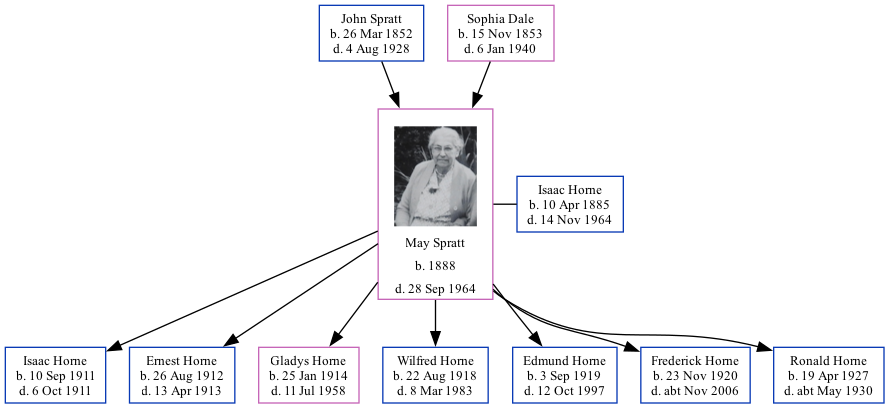

May Horne (née Spratt) 1888 - 1964
[ Home ] | [ Calendar ] | [ Surnames Index ] | [ Family History ]The daughter of John Spratt (an agricultural laborer) and Sophia DaleMay Spratt, the grandmother of Nigel Horne, was born in St Nicholas-at-Wade, Kent, England on Jan 1, 18881,2,3,4,5,6,7, was baptized there on Feb 29, 1888 and married Isaac Horne (a hay trusser & thatcher heavy worker market gardener with whom she had 7 children: Isaac George, Ernest John, Gladys Jane, Wilfred George, Edmund Frank, Frederick Norman and Ronald Leonard) at All Saints Church, Westbrook, Margate, Kent, England on Jul 2, 19109.
May spent all of her life in Kent, England. Throughout her life, she lived in several places around the county: at Shuart Cottage, Podden Street in St Nicholas-at-Wade on Apr 5, 189112; at 2 Nash Court Cottage, Nash Road in Margate on Mar 31, 190113; at 4 Newington Terrace, St Lawrence, Thanet on Apr 2, 191111; at Pansy Cottage, Way, Minster, Thanet on Jun 19, 19214; at Way Cottages, Minster, Thanet on Aug 28, 1931 and on Sep 29, 19395 (when she was living with her mother, Sophia); on The Cottage, Foxborough Lane, Minster, Thanet in 1960; and at Lachine, 22 High Street, Minster, Thanet in 1964. May Before 1910 she was working at Childrens Nurse in Switzerland.
She died on Sep 28, 1964 in Minster, Thanet, Kent8 and was buried there at Minster Cemetery, Tothill St in 196410.
Parents
- John was born on Mar 26, 1852
- Sophia was born on Nov 15, 1853
Children
- Isaac George was born on Sep 10, 1911
- Ernest John was born on Aug 26, 1912
- Gladys Jane was born on Jan 25, 1914
- Wilfred George was born on Aug 22, 1918
- Edmund Frank was born on Sep 3, 1919
- Frederick Norman was born on Nov 23, 1920
- Ronald Leonard was born on Apr 19, 1927
Citations
- 1891 England Census Online publication - Provo, UT, USA: The Generations Network, Inc., 2005.Original data - Census Returns of England and Wales, 1891. Kew, Surrey, England: The National Archives of the UK (TNA): Public Record Office (PRO), 1891. Data imaged from The National
- 1901 England Census Online publication - Provo, UT, USA: The Generations Network, Inc., 2005.Original data - Census Returns of England and Wales, 1901. Kew, Surrey, England: The National Archives of the UK (TNA): Public Record Office (PRO), 1901. Data imaged from the National
- 1911 England Census Online publication - Provo, UT, USA: Ancestry.com Operations, Inc., 2011.Original data - Census Returns of England and Wales, 1911. Kew, Surrey, England: The National Archives of the UK (TNA), 1911. Data imaged from the National Archives, London, England.
- 1921 Census Of England & Wales - Findmypast (was age 33 and the wife of the head of the household)
- 1939 Register - Findmypast (was the wife of the head of the household)
- England & Wales, FreeBMD Birth Index, 1837-1915 Online publication - Provo, UT, USA: The Generations Network, Inc., 2006.Original data - General Register Office. England and Wales Civil Registration Indexes. London, England: General Register Office. © Crown copyright. Published by permission of the Cont
- Public Member Trees Online publication - Provo, UT, USA: The Generations Network, Inc., 2006.Original data - Family trees submitted by Ancestry members.Original data: Family trees submitted by Ancestry members.
- England & Wales, Death Index: 1984-2005 Online publication - Provo, UT, USA: The Generations Network, Inc., 2007.Original data - General Register Office. England and Wales Civil Registration Indexes. London, England: General Register Office. © Crown copyright. Published by permission of the Cont
- Other
- Billiongraves
- 1911 Census for England & Wales - Findmypast (was age 23 and the wife of the head of the household)
- 1891 England, Wales & Scotland Census - Findmypast (was age 3 and the daughter of the head of the household)
- 1901 England, Wales & Scotland Census - Findmypast (was age 12 and the daughter of the head of the household)
Media
isaac horne - may spratt - gladys horne - headstone

isaac horne - may spratt - gladys horne - headstone
Isaac Horne - May Spratt - marriage certificate

May Spratt

May Spratt - birth certificate
May Spratt - birth certificate
May Spratt
May Spratt - 2

May Spratt
Thanet Times July 5, 1960

Thanet Times July 5, 1960
1939 Register Transcription - TNA-R39-1820-1820H-015-06
1939 Register Transcription - TNA-R39-1820-1820H-015-08
England & Wales marriages 1837-2008 - BMD/M/1910/3/AZ/000903/096
England & Wales deaths 1837-2007 - BMD/D/1964/3/AZ/000352/184
England & Wales births 1837-2006 - BMD/B/1888/1/AZ/000536/016
Canterbury Baptisms - GBPRS/CANT/B/96802312
1891 England, Wales & Scotland Census - GBC/1891/0005855069
1939 Register Transcription - TNA-R39-1820-1820H-015-07
England Births & Baptisms 1538-1975 - R_884948143
1921 Census of England & Wales - GBC/1921/RG15/04430/0061/02
Family Tree
Generated by ged2site. Last updated on Nov 13, 2024